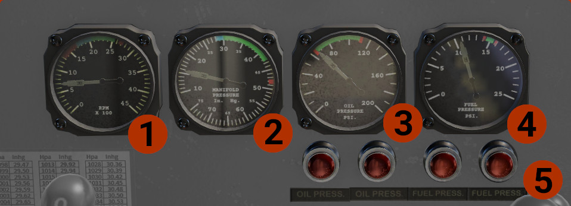
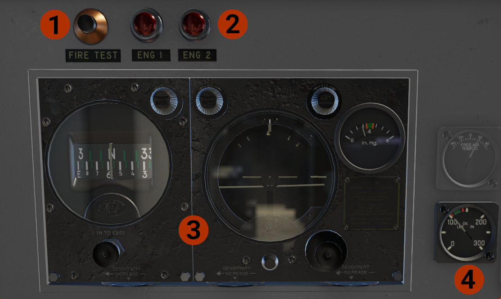

Center Panel
Lower Panel
On the lower center panel are the main engine instruments. 
- Engines RPM: Indicates the rpm for each engine. Some values you must have in mind:
- For take off only, set 2700 RPM.
- After take off, for climb out, reduce RPM at the top of green area, ~2550 RPM.
- As you climb, above 5-6,000 ft, reduce even more, as required.
- Keep the engine around 1000 RPM, for warm up.
- Manifold Pressure: Values to have in mind:
- For take off, set the power at the top of green area. If heavy take off weight or/and short runway, you can set more power, but in any case below the red line!
- For climb, set power at 40-42 inHg.
- Engine Oil Pressure: Indicates the oil pressure, per engine. Critical to keep the needles inside the limits.
- Fuel Pressure: Indicates the fuel pressure at the carburetors, per engine.
- Annunciator: Indicate if a pressure (oil or fuel), is not within operating limits. Rotate each light to adjust brightness.
Upper Panel

- Fire Test: Press the button to test the fire alarm system, lights (#2) and bell ring. Requires at least battery power.
- Fire Alarm Lights: Indicate if a fire is sense in one of the engines. Rotate the light to adjust brightness.
- Sperry A-3A Automatic pilot: Read detailed description and operation on the Automatic pilot page.
- Oil Pressure: Indicates the oil pressure for the autopilot.